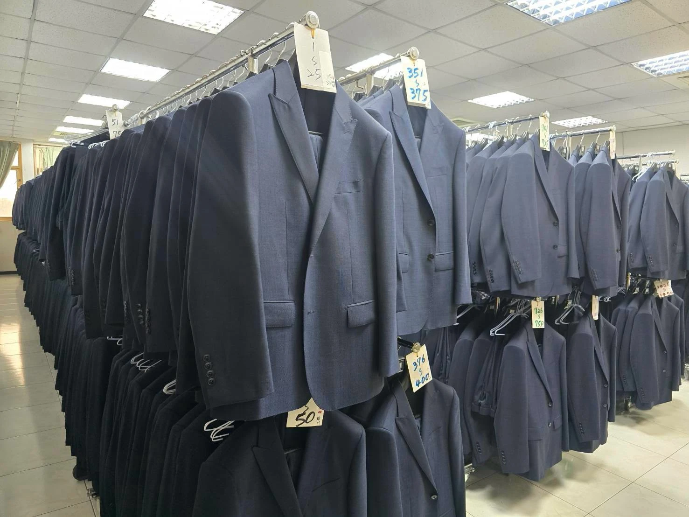

商務與辦公
西服、女士套裝、背心與襯衫建立穩重俐落的工作形象
 企業制服形象示意
企業制服形象示意ONE TEAM A SHARED IDENTITY
制服不只代表企業也陪伴同仁度過每個工作日
野木提供公司與團體服裝服務。從工作情境、職務差異、穿著人數到季節需求，整理出適合團隊的品項組合，兼顧整體形象與實際穿著。
西服、女士套裝、背心與襯衫建立穩重俐落的工作形象
透過配色、版型與品項搭配讓第一線服務更具品牌辨識
依戶外移動及季節需求規劃機能外套與多層次穿著
PROJECT PLANNING
企業制服需要的不只是款式更是清楚的合作流程
確認人數、職務、品項、預算方向與交付時間
討論企業色系與服裝搭配確認製作方案
依專案安排量身或尺寸確認展開製作
完成品檢整備及配套依約定方式交付
預估穿著人數、需要的服裝品項、主要使用情境，以及希望交付的時間。尚未定案也沒關係，我們可以從需求一起整理。
UNIFORM COLLECTION


READY FOR YOUR TEAM
從製作完成到配套交付，依序整理服裝，讓整批制服的交接更有條理。企業專案的品項、尺寸與交付安排，可於諮詢時一併討論。
DELIVERY & AFTERCARE
交付服務涵蓋整燙、配套與懸掛式出貨。實際包裝、運送及售後安排，依專案內容與交付地點確認。
PROJECT QUESTIONS
最低數量與製作條件依服裝品項、面料及專案規模而異。請先提供預估人數，我們會一起確認可行方案。
可提供品牌識別、色彩或既有制服作為參考再依可用面料與製作方式討論搭配
請先告知人數、服務地點及預計使用日期；量身方式、分批安排與交期會依專案另行確認
LET’S MAKE IT YOURS
告訴我們你的需求一起找到合適的款式與製作方向